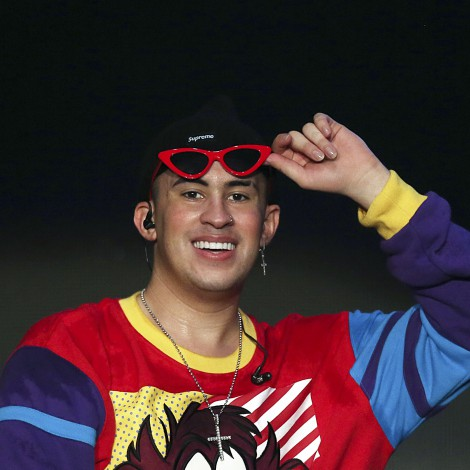

BAD BUNNY
Mini webgrafia
Bad Bunny, es un rapero y compositor puertorriqueño. Su estilo de música es generalmente definido como trap latino y reguetón, pero también incorporó otros géneros como rock, kizomba y soul. También es conocido por su entonación grave y rasposa y su llamativo estilo.
Inicios 
Comenzó a escribir y crear sus propias interpretaciones a sus 14 años, hasta que en 2013, empezaría a publicar sus canciones por medio de SoundCloud, donde durante 2016 su canción «Diles» llamó la atención del productor DJ Luian quien lo contrató para su sello discográfico Hear This Music. Este introdujo a Bad Bunny al equipo de productores Mambo Kingz, quienes estaban intrigados por la experimentación de la música y la moda de Benito. Desde entonces, El sencillo «Soy Peor», alcanzó el puesto 22 en la lista Hot Latin Songs y estableció a Bad Bunny como un pionero en la escena del trap latino.